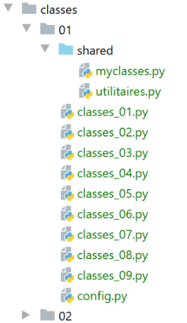

12. Les classes et objets
La classe est le moule à partir duquel sont fabriqués des objets. On dit de l'objet que c'est l'instance d'une classe.

Note : le dossier [shared] a été placé dans les [Sources Root] du projet.
12.1. script [classes_01] : une classe Objet
Le script [classes_01] montre une utilisation obsolète des classes :
- # une classe
- class Objet(object):
- """une classe Objet vide"""
- # toute variable de type [Objet] peut avoir des attributs par construction
- obj1 = Objet()
- obj1.attr1 = "un"
- obj1.attr2 = 100
- # affiche l'objet
- print(f"objet1=[{obj1}, {type(obj1)},{id(obj1)},{obj1.attr1},{obj1.attr2}]")
- # modifie l'objet
- obj1.attr2 += 100
- # affiche l'objet
- print(f"objet1=[{obj1.attr1},{obj1.attr2}]")
- # affecte la référence obj1 à obj2
- obj2 = obj1
- # modifie l'objet pointé par obj2
- obj2.attr2 = 0
- # affiche les deux objets - obj1 pointe maintenant sur un objet modifié
- print(f"objet1=[{obj1.attr1},{obj1.attr2}]")
- print(f"objet2=[{obj2.attr1},{obj2.attr2}]")
- # obj1 et obj2 pointent sur le même objet
- print(f"objet1=[{obj1}, {id(obj1)},{obj1.attr1},{obj1.attr2}]")
- print(f"objet2=[{obj2}, {id(obj2)},{obj2.attr1},{obj2.attr2}]")
- print(obj1 == obj2)
- # type de l'instance obj1
- print(f"type(obj1)={type(obj1)}")
- print(f"isinstance(obj1,Objet)={isinstance(obj1, Objet)}, isinstance(obj1,object)={isinstance(obj1, object)}")
- # tout type est un objet en Python
- print(f"type(4)={type(4)}")
- print(f"isinstance(4, int)={isinstance(4, int)}, isinstance(4, object)={isinstance(4, object)}")
Notes :
- lignes 2-3 : une classe [Objet] vide ;
-
ligne 2 : la classe peut être déclarée sous trois formes :
-
class Objet ;
- class Objet() ;
-
class Objet(object) ;
-
ligne 3 : une autre forme de commentaire. Celui-ci précédé de trois " peut s'étaler sur plusieurs lignes ;
- ligne 7 : instanciation de la classe Objet. Le résultat est une adresse comme le montreront les lignes 24-26 ;
- lignes 8-9 : initialisation directe de deux attributs de l'objet ;
- ligne 17 : copie de références. Les variables obj1 et obj2 sont deux pointeurs (références) sur un même objet ;
- ligne 19 : on modifie l'objet pointé par [obj2]. Comme [obj1] et [obj2] pointent sur le même objet, les affichages des objets [obj1, obj2] des lignes 21 et 22 vont montrer que l'objet pointé par [obj1] a changé ;
- lignes 24-26 : ces lignes visent à montrer l'égalité des variables [obj1] et [obj2]. L'affichage de la ligne 26 va le montrer. Dans cette comparaison, ce sont les adresses [obj1] et [obj2] qui sont égales ;
- chaque objet Python est identifié par un n° unique qu'on obtient avec l'expression [id(objet)]. Les lignes 24 et 25 vont montrer que les n°s des objets pointés par [obj1] et [obj2] sont identiques, montrant par là que ces deux références pointent sur le même objet ;
- lignes 27-29 : la fonction [isinstance(expr,Type)] rend le booléen True si l'expression [expr] est de type [Type]. Ici, on va voir que [obj1] est de type [Objet], ce qui semble naturel, mais également de type [object]. La classe [object] est la classe parent de toutes les classes Python. Par propriété de l'héritage de classes, une classe fille F a toutes les propriétés de sa classe parent P et la fonction [isinstance(instance de F, P)] rend True ;
- lignes 30-32 : montrent que type [int] est lui aussi un type [object]. Tous les types de Python dérivent de la classe [object] ;
Résultats
- C:\Data\st-2020\dev\python\cours-2020\python3-flask-2020\venv\Scripts\python.exe C:/Data/st-2020/dev/python/cours-2020/python3-flask-2020/classes/01/classes_01.py
- objet1=[<__main__.Objet object at 0x0000025C3F469BB0>, <class '__main__.Objet'>,2595221838768,un,100]
- objet1=[un,200]
- objet1=[un,0]
- objet2=[un,0]
- objet1=[<__main__.Objet object at 0x0000025C3F469BB0>, 2595221838768,un,0]
- objet2=[<__main__.Objet object at 0x0000025C3F469BB0>, 2595221838768,un,0]
- True
- type(obj1)=<class '__main__.Objet'>
- isinstance(obj1,Objet)=True, isinstance(obj1,object)=True
- type(4)=<class 'int'>
- isinstance(4, int)=True, isinstance(4, object)=True
- Process finished with exit code 0
12.2. Script [classes_02] : une classe Personne
Le script [classes_02] montre que les attributs d'une classe sont publics : ils sont accessibles directement de l'extérieur de la classe. On a là encore une utilisation des classes déconseillée. On la donne néanmoins parce qu'on peut parfois trouver ce type de code (Python l'accepte) et il faut alors être capable de le comprendre.
- # classe Personne
- class Personne:
- # attributs de la classe
- # non déclarés - peuvent être créés dynamiquement
- # méthode
- def identité(self: object) -> str:
- # a priori, utilise des attributs inexistants
- return f"[{self.prénom},{self.nom},{self.âge}]"
- # ---------------------------------- main
- # les attributs sont publics et peuvent être créés dynamiquement
- # instanciation classe
- p = Personne()
- # initialisation directe d'attributs de la classe
- p.prénom = "Paul"
- p.nom = "de la Hûche"
- p.âge = 48
- # appel d'une méthode de la classe
- print(f"personne={p.identité()}")
- # type de l'instance p
- print(f"type(p)={type(p)}")
- print(f"isinstance(Personne)={isinstance(p, Personne)}, isinstance(object)={isinstance(p, object)}")
Notes :
- lignes 2-9 : une classe avec une méthode ;
- ligne 7 : toute méthode d'une classe doit avoir pour premier paramètre, l'objet self qui désigne l'objet courant. La méthode [identité] rend une chaîne de caractères ;
- ligne 15 : instanciation d'un objet [Personne] ;
- lignes 16-19 : montrent que les attributs de l'objet peuvent être créés dynamiquement (ils n'existent pas dans la définition de la classe) ;
- ligne 9 : les attributs de la classe sont désignés par la notation [self.attribut] ;
- les lignes 23-24 vont montrer que l'objet [p] est à la fois une instance de la classe [Personne] et de la classe [object] ;
Résultats
- C:\Data\st-2020\dev\python\cours-2020\python3-flask-2020\venv\Scripts\python.exe C:/Data/st-2020/dev/python/cours-2020/python3-flask-2020/classes/01/classes_02.py
- personne=[Paul,de la Hûche,48]
- type(p)=<class '__main__.Personne'>
- isinstance(Personne)=True, isinstance(object)=True
- Process finished with exit code 0
12.3. Script [classes_03] : la classe Personne avec un constructeur
Le script [classes_03] montre l'utilisation normale d'une classe :
- # classe Personne
- class Personne:
- # constructeur - initialise trois attributs
- def __init__(self: object, prénom: str, nom: str, âge: int):
- # prénom : prénom de la personne
- # nom : nom de la personne
- # âge : âge de la personne
- self.prénom = prénom
- self.nom = nom
- self.âge = âge
- # rend les attributs de la classe sous la forme d'une chaîne de caractères
- def identité(self: object) -> str:
- return f"[{self.prénom},{self.nom},{self.âge}]"
- # ---------------------------------- main
- # un objet Personne
- p = Personne("Paul", "de la Hûche", 48)
- # appel d'une méthode
- print(f"personne={p.identité()}")
Notes :
- ligne 4 : le constructeur d'une classe s'appelle __init__. Comme pour les autres méthodes, son premier paramètre est self ;
- ligne 20 : un objet Personne est construit avec le constructeur de la classe ;
- lignes 13-15 : la méthode [identité] rend une chaîne de caractères représentant le contenu de l'objet ;
- ligne 22 : affichage de l'identité de la personne ;
Résultats
- C:\Data\st-2020\dev\python\cours-2020\python3-flask-2020\venv\Scripts\python.exe C:/Data/st-2020/dev/python/cours-2020/python3-flask-2020/classes/01/classes_03.py
- personne=[Paul,de la Hûche,48]
- Process finished with exit code 0
12.4. Script [classes_04] : méthode statiques
Nous définissons dans le dossier [modules], la classe [Utils] suivante (utils.py) :

- class Utils:
- # méthode statique
- @staticmethod
- def is_string_ok(string: str) -> bool:
- # string est-elle une chaîne
- erreur = not isinstance(string, str)
- if not erreur:
- # la chaîne est-elle vide ?
- erreur = string.strip() == ''
- # résultat
- return not erreur
Notes
-
ligne 3 : l'annotation [@staticmethod] indique que la méthode ainsi annotée est une méthode de classe et non une méthode d'instance. Cela se voit au fait que le premier paramètre de la méthode ainsi annotée n'est pas le mot clé [self]. Ainsi la méthode statique n'a pas accès aux attributs de l'objet. Au lieu d'écrire :
-
u=Utils()
- print(u.is_string_ok("abcd")
on écrit
- print(Utils.is_string_ok("abcd")
Parce que ci-dessus on a écrit [Utils.is_string_ok], la méthode [is_string_ok] est dite une méthode de classe (la classe Utils ici). Pour cela, la méthode [Utils.is_string_ok] doit être annotée avec le mot clé [@staticmethod].
La méthode statique [Utils.is_string_ok] permet ici de vérifier qu'une donnée est une chaîne de caractères non vide.
Le script [classes_04] utilise la classe [Utils] de la façon suivante :
- # on configure l'application
- import config
- config = config.configure()
- # le syspath est configuré - on peut faire les imports
- from utilitaires import Utils
- print(Utils.is_string_ok(" "))
- print(Utils.is_string_ok(47))
-
print(Utils.is_string_ok(" q "))
-
lignes 1-4 : on utilise un script de configuration ;
Le script de configuration [config.py] est le suivant :
- def configure():
- import os
- # dossier du fichier de configuration
- script_dir = os.path.dirname(os.path.abspath(__file__))
- # chemins absolus des dossiers à mettre dans le syspath
- absolute_dependencies = [
- ** *f"{script_dir}/shared",*
- ** *"C:/Data/st-2020/dev/python/cours-2020/python3-flask-2020/venv/lib/site-packages",*
- ** *"C:/myprograms/Python38/lib",*
- ** **"C:/myprograms/Python38/DLLs"
- ** ]**
- # mise à jour du syspath
- from myutils import set_syspath
- set_syspath(absolute_dependencies)
- # on retourne la config
-
return {}
-
ligne 9 : le dossier [shared] va être placé dans le Python Path ;
Le résultat de l'exécution est le suivant :
- C:\Data\st-2020\dev\python\cours-2020\python3-flask-2020\venv\Scripts\python.exe C:/Data/st-2020/dev/python/cours-2020/python3-flask-2020/classes/01/classes_04.py
- False
- False
- True
- Process finished with exit code 0
12.5. Script [classes_05] : contrôles de validité des attributs
Le script [classes_05] introduit de nouvelles notions :
- définition d'un type d'exception propriétaire ;
- définition de la méthode [_str_] qui est la méthode d'identité par défaut des classes ;
-
définition de propriétés ;
-
# on configure l'application
- import config
- config = config.configure()
- # le syspath est configuré - on peut faire les imports
- from utilitaires import Utils
- # une classe d'exception propriétaire dérivant de [BaseException]
- class MyException(BaseException):
- # on ne fait rien : classe vide
- pass
- # classe Personne
- class Personne:
- # constructeur
- def __init__(self: object, prénom: str = "x", nom: str = "y", âge: int = 0):
- # prénom : prénom de la personne
- # nom : nom de la personne
- # âge : âge de la personne
- # mémorisation des paramètres
- # les initialisations seront faites via les setters
- self.prénom = prénom
- self.nom = nom
- self.âge = âge
- # méthode toString de la classe
- def __str__(self: object) -> str:
- return f"[{self.__prénom},{self.__nom},{self.__âge}]"
- # getters
- @property
- def prénom(self) -> str:
- return self.__prénom
- @property
- def nom(self) -> str:
- return self.__nom
- @property
- def âge(self) -> int:
- return self.__âge
- # setters
- @prénom.setter
- def prénom(self, prénom: str):
- # le prénom doit être non vide
- if Utils.is_string_ok(prénom):
- self.__prénom = prénom.strip()
- else:
- raise MyException("Le prénom doit être une chaîne de caractères non vide")
- @nom.setter
- def nom(self, nom: str):
- # le prénom doit être non vide
- if Utils.is_string_ok(nom):
- self.__nom = nom.strip()
- else:
- raise MyException("Le nom doit être une chaîne de caractères non vide")
- @âge.setter
- def âge(self, âge: int):
- # l'âge doit être un entier >=0
- erreur = False
- if isinstance(âge, int):
- if âge >= 0:
- self.__âge = âge
- else:
- erreur = True
- else:
- erreur = True
- # erreur ?
- if erreur:
- raise MyException("L'âge doit être un entier >=0")
- # ---------------------------------- main
- # un objet Personne
- try:
- # instanciation classe Personne
- p = Personne("Paul", "de la Hûche", 48)
- # affichage objet p
- print(f"personne={p}")
- except MyException as erreur:
- # affichage erreur
- print(erreur)
- # un autre objet Personne
- try:
- # instanciation classe Personne
- p = Personne("xx", "yy", "zz")
- # affichage objet p
- print(f"personne={p}")
- except MyException as erreur:
- # affichage erreur
- print(erreur)
- # une autre personne sans paramètres cette fois
- try:
- # instanciation classe Personne
- p = Personne()
- # affichage objet p
- print(f"personne={p}")
- except MyException as erreur:
- # affichage msg d'erreur
- print(erreur)
- # on ne peut pas accéder aux attributs privés __attr de la classe
- p.__prénom = "Gaëlle"
- print(f"p.prénom={p.prénom}")
- print(f"p.__prénom={p.__prénom}")
- p.prénom = "Sébastien"
- print(f"p.prénom={p.prénom}")
- print(f"p.__prénom={p.__prénom}")
Notes :
- lignes 10-13 : une classe MyException dérivée de la classe BaseException (nous verrons ce point un peu plus loin). Elle n'ajoute aucune fonctionnalité à cette dernière. Elle n'est là que pour avoir une exception propriétaire ;
- ligne 19 : le constructeur a des valeurs par défaut pour ses paramètres. Ainsi l'opération p=Personne() est équivalente à p=Personne("x","y",0) ;
- lignes 34-45 : les propriétés de la classe. Ce sont des méthodes annotées avec le mot clé [@property]. Elles sont utilisées pour rendre la valeur des attributs ;
- lignes 47-77 : les setters de la classe. Ce sont des méthodes annotées avec le mot clé [@attributsetter]. Elles sont utilisées pour fixer la valeur des attributs ;
-
lignes 48-54 : le setter de l'attribut [prénom]. Cette méthode sera appelée chaque fois qu'on affectera une valeur à l'attribut [prénom] :
-
p=Personne(…)
- p.prénom=valeur
La ligne 2 provoquera l'appel [p.prénom(valeur)]. L'intérêt de passer par un setter pour affecter une valeur à un attribut est que le setter étant une fonction, on peut vérifier la validité de la valeur affectée à l'attribut ;
- ligne 51 : on vérifie que la valeur affectée à l'attribut [prénom] est une chaîne de caractères non vide. On utilise pour cela la méthode statique [Utils.isStringOk] vue précédemment ;
-
ligne 52 : la valeur affectée à l'attribut [prénom] est débarrassée de ces "blancs" de début / fin de chaîne et affectée à l'attribut [self.__prénom]. Ce n'est donc pas l'attribut [prénom] qui est utilisé ici. On ne pouvait pas sinon on aurait eu un appel récursif infini. On pouvait utiliser n'importe quel nom d'attribut. Le fait d'avoir utilisé l'attribut [__prénom] avec deux underscores en début de l'identificateur a une signification spéciale : les attributs précédés de deux underscores sont privés à la classe. Cela signifie qu'ils ne sont pas visibles de l'extérieur de celle-ci. On ne peut donc écrire :
-
p=Personne(…)
- p.__prénom=valeur
En fait on verra bientôt qu'on peut l'écrire mais que ça ne modifie pas le prénom. Ça fait autre chose ;
- lignes 53-54 : si la valeur affectée au prénom n'est pas correct, on lance une exception. Ainsi le code appelant saura que son appel est incorrect ;
- lignes 35-37 : la propriété [prénom]. Elle sera appelée à chaque fois qu'on écrira [p.prénom] dans une expression. C'est alors la méthode [p.prénom()] qui sera appelée. Ligne 37, on rend la valeur de l'attribut [__prénom] puisqu'on a vu que le setter de l'attribut [prénom] affectait sa valeur à l'attribut privé [__prénom] ;
- lignes 56-62 : le setter de l'attribut [nom] est construit de façon analogue à celui de l'attribut [prénom]. Il en est de même pour celui de l'attribut [âge] aux lignes 64-77 ;
- bien que les propriétés [prénom, nom, valeur] ne soient pas les véritables attributs qui sont en réalité [__prénom, __nom, __âge], on continuera à les appeler les attributs de la classe, car elles s'utilisent comme tels ;
- lignes 19-28 : le constructeur de la classe utilise de façon implicite les setters des attributs [prénom, nom, âge]. En effet, en écrivant, ligne 26, [self.prénom = prénom], c'est implicitement la méthode [prénom(self, prénom)] qui va être appelée. La validité du paramètre [prénom] va alors être vérifiée. Il va en être de même pour les deux autres attributs [nom, âge] ;
-
avec ce modèle, on ne peut attribuer de valeurs incorrectes aux attributs [prénom, nom, âge] de la classe ;
-
lignes 30-32 : la fonction __str__ remplace la méthode qui s'appelait identité précédemment. Le nom [__str__] (2 underscores devant et derrière) n'est pas anodin. On va le voir par la suite ;
- lignes 83-86 : instanciation d'une personne puis affichage de son identité ;
- ligne 84 : instanciation ;
- ligne 86 : affichage. L'opération demande d'afficher la personne p sous la forme d'une chaîne de caractères. L'interpréteur Python appelle alors automatiquement la méthode p.__str__() si elle existe. Cette méthode joue le même rôle que la méthode toString() en Java ou dans les langages .NET ;
- lignes 87-89 : gestion d'une éventuelle exception de type MyException. Affiche alors l'erreur ;
- lignes 91-99 : idem pour une deuxième personne instanciée avec des paramètres erronés ;
- lignes 102-109 : idem pour une troisième personne instanciée avec les paramètres par défaut : on ne passe aucun paramètre. Ce sont alors les valeurs par défaut de ces paramètres dans le constructeur qui sont ici utilisées ;
- lignes 112-117 : on a dit que l'attribut [__prénom] était privé donc normalement non accessible de l'extérieur de la classe. On veut le vérifier ;
- lignes 112-114 : on affecte une valeur à l'attribut [__prénom] puis on vérifie la valeur des attributs [__prénom] et [prénom] qui normalement sont les mêmes ;
- lignes 115-117 : on recommence l'opération en initialisant cette fois l'attribut [prénom] ;
Résultats
- C:\Data\st-2020\dev\python\cours-2020\python3-flask-2020\venv\Scripts\python.exe C:/Data/st-2020/dev/python/cours-2020/python3-flask-2020/classes/01/classes_05.py
- personne=[Paul,de la Hûche,48]
- L'âge doit être un entier >=0
- personne=[x,y,0]
- p.prénom=x
- p.__prénom=Gaëlle
- p.prénom=Sébastien
- p.__prénom=Gaëlle
- Process finished with exit code 0
Notes
- lignes 5-6 : on voit que l'affectation [p.__prénom = "Gaëlle"] n'a pas changé la valeur de l'attribut [prénom], ligne 5 ;
- lignes 7-8 : on voit que l'affectation [p.prénom = "Sébastien"] n'a pas changé la valeur de l'attribut [__prénom], ligne 8 ;
Que faut-il en déduire ? Que probablement, l'opération [p.__prénom = "Gaëlle"] a créé un attribut public [__prénom] à la classe mais que celui-ci est différent de l'attribut privé [__prénom] manipulé au sein de celle-ci ;
12.6. Script [classes_06] : ajout d'une méthode d'initialisation de l'objet
Le script [classes_06] ajoute une méthode à la classe [Personne] :
- # on configure l'application
- import config
- config = config.configure()
- # le syspath est configuré - on peut faire les imports
- from utilitaires import Utils
- # une classe d'exception propriétaire dérivant de [BaseException]
- class MyException(BaseException):
- # on ne fait rien : classe vide
- pass
- # classe Personne
- class Personne:
- # constructeur
- def __init__(self: object, prénom: str = "x", nom: str = "y", âge: int = 0):
- # prénom : prénom de la personne
- # nom : nom de la personne
- # âge : âge de la personne
- # mémorisation des paramètres
- # les initialisations seront faites via les setters
- self.prénom = prénom
- self.nom = nom
- self.âge = âge
- # autre méthode d'initialisation
- def init_with_personne(self: object, p: object):
- # initialise l'objet courant avec une personne p
- self.__init__(p.prénom, p.nom, p.âge)
- # méthode toString de la classe
- def __str__(self: object) -> str:
- return f"[{self.__prénom},{self.__nom},{self.__âge}]"
- # getters
- …
- # setters
- …
- # ---------------------------------- main
- # un objet Personne
- try:
- # instanciation classe Personne
- p = Personne("Paul", "de la Hûche", 48)
- # affichage objet p
- print(f"personne={p}")
- except MyException as erreur:
- # affichage msg d'erreur
- print(erreur)
- # un autre objet Personne
- try:
- # instanciation classe Personne
- p = Personne("xx", "yy", "zz")
- # affichage objet p
- print(f"p={p}")
- except MyException as erreur:
- # affichage msg d'erreur
- print(erreur)
- # une autre personne sans paramètres cette fois
- try:
- # instanciation classe Personne
- p = Personne()
- # affichage objet p
- print(f"p={p}")
- except MyException as erreur:
- # affichage msg d'erreur
- print(erreur)
- # une autre Personne obtenue par recopie
- try:
- # instanciation classe Personne
- p2 = Personne()
- p2.init_with_personne(p)
- # affichage objet p2
- print(f"p2={p2}")
- except MyException as erreur:
- # affichage msg d'erreur
- print(erreur)
Notes :
- la différence avec le script précédent est en lignes 30-33. On a rajouté la méthode initWithPersonne. Celle-ci fait appel au constructeur __init__. Il n'y a pas possibilité d'avoir, comme dans les langages typés, des méthodes de même nom différenciées par la nature de leurs paramètres ou de leur résultat. Il n'y a donc pas possibilité d'avoir plusieurs constructeurs qui construiraient l'objet à partir de paramètres différents, ici un objet de type Personne ;
Résultats
- C:\Data\st-2020\dev\python\cours-2020\python3-flask-2020\venv\Scripts\python.exe C:/Data/st-2020/dev/python/cours-2020/python3-flask-2020/classes/01/classes_06.py
- personne=[Paul,de la Hûche,48]
- L'âge doit être un entier >=0
- p=[x,y,0]
- p2=[x,y,0]
- Process finished with exit code 0
12.7. Script [classes_07] : une liste d'objets Personne
Nous mettons désormais les classes [MyException] et [Personne] dans un module pour pouvoir les utiliser sans avoir à recopier leur code :

Les deux classes seront dans le module [myclasses.py] ci-dessus.
Le script [classes_07] montre qu'on peut avoir une liste d'objets :
- # on configure l'application
- import config
- config = config.configure()
- # le syspath est configuré - on peut faire les imports
- from myclasses import Personne
- # ---------------------------------- main
- # création d'une liste d'objets personne
- groupe = [Personne("Paul", "Langevin", 48), Personne("Sylvie", "Lefur", 70)]
- # identité de ces personnes
- for i in range(len(groupe)):
- print(f"groupe[{i}]={groupe[i]}")
Notes :
- ligne 7 : on importe la classes [Personne] ;
- ligne 11 : un liste d'objets de type [Personne] ;
- lignes 13-14 : on parcourt cette liste pour afficher chacun de ses éléments ;
- ligne 14 : la fonction [print] va afficher la chaîne représentant l'objet [groupe[i]]. Par défaut, c'est la méthode [__str__] de ceux-ci qui sera appelée ;
Résultats
- C:\Users\serge\.virtualenvs\cours-python-v02\Scripts\python.exe C:/Data/st-2020/dev/python/cours-2020/v-02/classes/01/classes_07.py
- groupe[0]=[Paul,Langevin,48]
- groupe[1]=[Sylvie,Lefur,70]
- Process finished with exit code 0
12.8. Script [classes_08] : création d'une classe dérivée de la classe Personne
Nous définissons dans le module [myclasses], la classe [Enseignant] suivante :
- # classe Enseignant
- class Enseignant(Personne):
- # constructeur
- def __init__(self, prénom: str = "x", nom: str = "x", âge: int = 0, discipline: str = "x"):
- # prénom : prénom de la personne
- # nom : nom de la personne
- # âge : âge de la personne
- # discipline : discpline enseignée
- # initialisation du parent
- Personne.__init__(self, prénom, nom, âge)
- # autres initialisations
- self.discipline = discipline
- # toString
- def __str__(self) -> str:
- return f"enseignant[{super().__str__()},{self.discipline}]"
- # propriétés
- @property
- def discipline(self) -> str:
- return self.__discipline
- @discipline.setter
- def discipline(self, discipline: str):
- # la discipline doit être une chaîne non vide
- if Utils.is_string_ok(discipline):
- self.__discipline = discipline
- else:
-
raise MyException("La discipline doit être une chaîne de caractères non vide")
-
ligne 2 : déclare la classe Enseignant comme étant une classe dérivée de la classe Personne. Une classe dérivée a toutes les propriétés (attributs et méthodes) de sa classe parent plus celles qui lui sont propres ;
- ligne 13 : la classe [Enseignant] définit un nouvel attribut [discipline] ;
- ligne 11 : le constructeur de la classe dérivée Enseignant doit appeler le constructeur de la classe parent Personne en lui transmettant les paramètres qu'il attend ;
- ligne 17 : la fonction [super()] rend la classe parent. Ici on appelle la fonction [__str__] de la classe parent ;
- lignes 19-30 : on définit le getter et setter du nouvel attribut [discipline] ;
Le script [classes_08] utilise la classe [Enseignant] de la façon suivante :
- # on configure l'application
- import config
- config = config.configure()
- # le syspath est configuré - on peut faire les imports
- from myclasses import Personne, Enseignant
- # ---------------------------------- main
- # création d'un tableau d'objets Personne et dérivés
- groupe = [Enseignant("Paul", "Langevin", 48, "anglais"), Personne("Sylvie", "Lefur", 70)]
- # identité de ces personnes
- for i in range(len(groupe)):
- print(f"groupe[{i}]={groupe[i]}")
Notes :
- ligne 7 : on importe les classes [Personne] et [Enseignant] définies dans le fichier [myclasses.py] ;
- lignes 11-14 : on définit un groupe de personnes dont on affiche ensuite l'identité ;
Résultats
- C:\Data\st-2020\dev\python\cours-2020\python3-flask-2020\venv\Scripts\python.exe C:/Data/st-2020/dev/python/cours-2020/python3-flask-2020/classes/01/classes_08.py
- groupe[0]=enseignant[[Paul,Langevin,48],anglais]
- groupe[1]=[Sylvie,Lefur,70]
- Process finished with exit code 0
12.9. Script [classes_09] : seconde classe dérivée de la classe Personne
Le script [classes_09] introduit la classe [Etudiant] dérivée de la classe [Personne]. Celle-ci est définie de la façon suivante dans le module [myclasses] :
- # classe Etudiant
- class Etudiant(Personne):
- # constructeur
- def __init__(self: object, prénom: str = "x", nom: str = "y", âge: int = 0, formation: str = "x"):
- Personne.__init__(self, prénom, nom, âge)
- self.formation = formation
- # toString
- def __str__(self: object) -> str:
- return f"étudiant[{super().__str__()},{self.formation}]"
- # propriétés
- @property
- def formation(self) -> str:
- return self.__formation
- @formation.setter
- def formation(self, formation: str):
- # la formation doit être une chaîne non vide
- if Utils.is_string_ok(formation):
- self.__formation = formation
- else:
- raise MyException("La formation doit être une chaîne de caractères non vide")
Le script [classes_09] utilise la classe [Etudiant] de la façon suivante :
- # on configure l'application
- import config
- config = config.configure()
- # le syspath est configuré - on peut faire les imports
- from myclasses import Personne, Enseignant, Etudiant
- # ---------------------------------- main
- # création d'un tableau d'objets Personne et dérivés
- groupe = [Enseignant("Paul", "Langevin", 48, "anglais"), Personne("Sylvie", "Lefur", 70),
- ** *Etudiant("Steve", "Boer", 22, "iup2 qualité")]*
- # identité de ces personnes
- for personne in groupe:
- # affichage personne
- print(personne)
Notes :
- ce script est analogue au précédent.
Résultats
- C:\Data\st-2020\dev\python\cours-2020\python3-flask-2020\venv\Scripts\python.exe C:/Data/st-2020/dev/python/cours-2020/python3-flask-2020/classes/01/classes_09.py
- enseignant[[Paul,Langevin,48],anglais]
- [Sylvie,Lefur,70]
- étudiant[[Steve,Boer,22],iup2 qualité]
- Process finished with exit code 0
12.10. Script [classes_10] : la propriété [__dict__]
Le script [classes_10] présente la propriété [__dict__] que nous allons souvent utiliser par la suite :
- # on configure l'application
- import config
- config = config.configure()
- # le syspath est configuré - on peut faire les imports
- from myclasses import Etudiant
- # ---------------------------------- main
- # création d'un étudiant
- étudiant=Etudiant("Steve", "Boer", 22, "iup2 qualité")
- # dictionnaire des propriétés
- print(étudiant.__dict__)
Commentaires
- lignes 1-4 : l’application est configurée ;
- ligne 7 : la classe [Etudiant] est importée ;
- ligne 11 : instanciation d’un étudiant ;
- ligne 13 : utilisation de la méthode prédéfinie [__dict__] (2 caractères soulignés avant et après l’identifiant) ;
Les résultats sont les suivants :
- C:\Data\st-2020\dev\python\cours-2020\python3-flask-2020\venv\Scripts\python.exe C:/Data/st-2020/dev/python/cours-2020/python3-flask-2020/classes/01/classes_10.py
- {'_Personne__prénom': 'Steve', '_Personne__nom': 'Boer', '_Personne__âge': 22, '_Etudiant__formation': 'iup2 qualité'}
-
Process finished with exit code 0
-
ligne 2, on obtient un dictionnaire dont les clés sont les propriétés de l’objet préfixées par le nom de la classe à laquelle elles appartiennent. Nous utiliserons ce dictionnaire pour faire une passerelle entre objet et dictionnaire ;